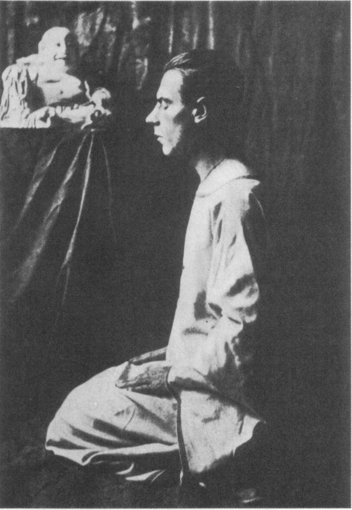
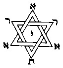

April 2, 1886, to December 24, 1909
Charles Stansfeld Jones, whom I shall usually mention by the motto V.I.0., which he took on becoming a Probationer of the A :. A :. . . ,made his entry into this World by the usual and approved method, on April 2nd 1886
E. V., having only escaped becoming an April Fool by delaying a day to summon up enough courage to turn out once more into this cold and uninviting World. Having been oiled, smacked and allowed to live, we shall trouble no further about the details of his career until 1906, when, having reached the age of 20 years, he began to turn his attention toward the Mysteries, and to investigate Spiritualism, chiefly with the idea of disproving it. From this year his interest in the Occult seems to date, and it was about this time that he first consciously aspired to find, and get into touch with, a True Occult Order. This aspiration was, as we shall see, fuffilled three years later, when he had an opportunity to become a Probationer of the A .•. A . ., and immediately grasped it; but during those three years his researches led him into varied paths:
Spiritualism, Faithism and other Isms on the one hand, and “The Europe,” “The Leicester,” and “The Cosy Corner” on the other: last, but not least, into Marriage, a difficult thing to put on one side and perhaps best left on the other. Having then plunged wholeheartedly into this final experiment, becoming as it were “Omnia in Uno” for a time, he emerged in a frame of mind well suited to the study of Scientific Illuminism, of which he was much in need, and, having signed the Probationer’s Pledge Form on December 24th, 1909, E.V., he took— after careful thought—the Motto “Unus in Omnibus” and has been riding very comfortably ever since.
From this time onward, according to the Rules of the Order, he began keeping a written record of his Work, and this makes our task easier; but since he himself became more serious from that moment, we must to a certain extent follow his example and treat what is recorded as the attempt of a struggling soul to obtain Light for himself and others. Whatever his mistakes, however poor his results, or laughable his failures, there is this much to be said for him, that he never turned back.
December 24, 1909, to May 14, 1910
Frater V.I.0. started off bravely enough. As soon as he had read the first number of The Equinox, and before he got into touch with any Member of the A .. A :. he made an attempt at Asana. The earliest record I can find reads as follows:
Thursday, Nov. 4th, 1909. 11:20 P.M. to 11:41 P.M.
Asana. Position I. The God.
Inclination for back to bend, just above hips, had to straighten up several times.
Opened eyes once and moved head, after about five minutes.
Breathed fairly regularly after the first few minutes, counting 9 in, holding 4, 9 out, holding 4.
Saw various colours in clouds, and uncertain figures, during the latter part of the time.
On December 19th his practice lasted 46 minutes. He hoped to do 6o minutes next time. But he does not appear to have done so, for after signing his Probationer’s Oath on December 24th I find no record till January 11th, 1910, E.V., the day he received his first written instructions from his Neophyte, Frater P.A. As those instructions represent the basis upon which he worked for a considerable period, I shall include them here, in spite of the fact that it may have been out of order for him to work on definite instructions at all, since the Probationer is supposed to choose for himself those practices which please him best, and to experiment therewith for himself. Since however he did not know this at the time, he cannot be blamed for doing his best along the lines laid down by his Neophyte.1 In any case he might have done far worse than to strive to carry out these few simple rules which are as follows:
THE RULES
1. Ever be moderate and follow the middle path; rather be the tortoise than the hare; do not rush wildly into anything; but do not abandon what you have taken up, without much forethought.
2. Always keep your body and mind in a healthy and fit condition; and never carry out an exercise, whether mental or physical, when you are fatigued.
3. In an ideal country the hours in which to practice are: at sunrise, sunset, noon and midnight (and always before a meal never immediately after one). As this cannot be done with comfort,
Notes:
1. It is presumptuous for a Neophyte to lay down rules; for (a) he cannot possibly know what his Probationer needs, having no record to guide him; (b) the Probationer’s task is to explore his own nature, not to follow any prescribed course. A third objection is that by putting the Probationer in Corsets, an entirely flabby person may sneak through his year, and become a Neophyte, to the shame of the Order. But this objection is theoretical; for Initiation is overseen from the Third Order, where no Error may endure.—O.M.
in this country (England), let your chief practice take place an hour or half an hour before your breakfast hour.
4. If possible set apart a room wherein to carry out your exercises; keep it clean, and only keep in it objects which please you; burn a little incense in the room before beginning an exercise; keep the room holy to yourself, and do not allow yourself or another to do anything unbalanced in thought or action in it. In will and deed make this room a temple and a symbol of that greater Temple which is your HIGHER SELF.
The First Exercise
Rise to time, and without undue haste, wash and dress, robe yourself and enter the room you have set apart; burn a little incense and turning to the East repeat some simple orison such as: “May the light of Adonai arise within me, may it guide me through this day and be as a lamp to lighten my darkness.” Then make a general confession, as shortly as possible, of your last day’s work and enter it in your diary, after which sit down in a comfortable position and do the following.
With your hands upon your knees and your head straight, take in a breath in measured time inwards and concentrate the whole of your thought on that breath as it flows into your lungs, cutting away all other thoughts that may arise at the time; then exhale the breath, still keeping your thought fixed on it. Do this for some ten minutes or a quarter of an hour, and mark down in your diary the number of “breaks,” or any result. The whole of this practice must be performed rhythmically and harmoniously.
The Second Exercise
As the rush of daily work tends to undo what the morning exercise has done, try your utmost to turn every item of your professional work into a magical exercise. Do all, even the smallest work, in honour and glory of Adonai: excel in your special duties in life, because He is of you, and you of Him; do not think of Him as Adonai, but think of Adonai as the work; and of your daily work create a symbol of the Symbol of “The Great Work which is TO BE.”
The Third Exercise
As the rush of your daily work tends to unbalance you, so do the pleasures you indulge in. Cultivate joyfulness in all your amusements; and, when joyful, break out into silent and inward praise of the joy within you. Do not make a prudish exercise of it, work silently and joyously, and do not discuss your results with casual friends. And above all do everything for the honour and glory of Adonai, so that of your daily pleasures you may construct a symbol of that Unchanging Joy that IS.
These instructions were accompanied by a letter from which I quote the following: “The enclosed exercises perform regularly, say to yourself: ‘I will do these for three months; even if I get no benefit from them, yet I am determined to do them.’ Write to me whenever you like, but don’t consider any result that you may get as worth much; for these little exercises are only to produce an equilibrium which is essential before really setting out. If you add any exercise of your own then do it at a definite hour daily and do it continuously; to take up an exercise and then drop it is worse than useless, for it is unbalancing.”
Now, as any Probationer knows, as soon as one sets out to do the simplest task regularly and with magical intent, that task becomes not only difficult, but well nigh impossible of performance. This is just what V.I.0. found, and no sooner had his task been set than all kinds of difficulties presented themselves, like the dog-faced demons mentioned by Zoroaster, to prevent its fulfilment. He tried, but at the end of January he writes: “I cannot get on under these conditions. Had plenty of time to do exercises this morning, but was continually interrupted. Did not robe myself as I have no place fit to call a temple.” How little did he know at that time how well off he really was in the latter respect! He was living in comfort in a Kensington Flat with every convenience of civilization; a few years later he was glad to do Asana and perform his meditations out in the rain, clad in pyjamas, because his tiny tent in British Columbia was too small to allow of work inside. But we digress. At this point his record breaks off abruptly. He remained in London until May of 1910, when circumstances arose which made it possible for him to visit British Columbia.
Armed then with his instruction paper, The Equinox, and a few Occult books, he sailed for Canada, alone, to start again in new and unpioughed fields.
July 25, 1910, to April 30, 1911
The next entry in his diary is dated July 25th, 1910. It is a general confession of the previous six months. Half of his year of Probation had passed away, and he has not reported to, or received any communication from, the Order. He laments his negligence in this respect, but writes: “Yet know I well that I alone have suffered and shall suffer from this negligence, and I must humbly take any results that may arise out of my failure. Still, even though I may have neglected the advice given me when I first became a Probationer, I feel that I have progressed, be it never so slightly, along the Path which from the first I set out to tread. May it not be, 0 Adonai, that even now the second six months may be made to balance the first six, and that what is passed may yet be for the best?”
At that time he had not found out that things always turn out for the best; it took him a long while to realize this, but it is evident that soon afterwards his efforts produced some result; for we find an entry on Sunday, August 7th, 1910. “I have found (for a few moments) the Peace which passeth all understanding. Amen.” This was evidently the foreshadowing of his first really notable result, the first Dawning of L.V.X. which he experienced on August 29th. There is an entry on September 2nd, full of joy and gladness and wonder at his first Illumination; and then, three days later, he had evidently recognised that this alone was not enough, and this was evidently the reason for the next somewhat curious entry of September 5th,7 :53 P.M., which I shall quote practically in full:
I am calm now, as I commence to write what may be the last entry in this diary. All that I can remember of my life on this planet has, as I look back upon it, been guided by an unseen hand. For so short a life (24 years and six months) it has been filled with an unusual number of incidents, some painful, some joyful and some of a purely spiritual nature. I regret nothing. Again three days have passed since I made entry in this book. I cannot talk of what has happened during those three days, it seems useless to try and do so, in fact it seems useless to make this entry at all except that I know not what is before me, and I feel that had I (or if I) lived longer upon this planet it would have been my life work, indeed it must have been, to help others to the Path. Therefore to those who follow after are these lines written in the hope that they may be saved one drop of the anguish I now suffer. Whatever may have happened in this last three days, the results of my thoughts amount to this. I who have found the heart of the shining triangle, who have indeed become one with the Great White Brotherhood, who have heard the Voice of God in all Its sweetness, who have made that message a part (nay all) of my being, who have held my Beloved in my arms, who have Become my Beloved and lost myself therein, who have for ever given up my lower self, who have conquered Death, who have felt the Pain of the whole World, who have found Wisdom, Love and Power, who have given up All to become Nothing, I who have seen the need of the World, have found that books (hitherto my dearest companions) have no longer any word to say to me—have found that knowledge (relative) or what I thought was knowledge, is of no avail to supply the need of all that other part of my Being that my great God-love would give it. I who have conquered Fear and Death, am now confronted with the fact that without Absolute Knowledge all is vain. I am going to ask the One Last Question. WHY? I have written it. An awful stillness falls. I am alone in my lodgings, I have no money, and I cannot use my Will to demand it from others if I can give nothing in return to help them to find what they really seek. I have cried with Christ “Eli, Eli, Lama Sabacthani.” I have suffered the Bloody Sweat with Him on the Cross, and now I say with Him “It is finished” Amen. One last note occurs to me before I wrap up this book and seal it and address it to F. . . in whose hands it will be safe. I looked into the eyes of a little child this evening. Does the answer lie there?
Sep. 5th, 12:26 P.M. It is over. I have unsealed the package and once more opened the book. This time it will be but a short entry. Very quietly I knelt; I did not robe or burn incense. I just took with me the memory of the little child who had looked into my eyes as I kissed its forehead. Very quietly I asked my question. I rose and lay upon the bed, and soon the answer came. It came quite silently, and at first I thought I must be mistaken, I had (it seemed) heard it so many times before. No other answer came, so I went out into the streets and along my way. Gradually the fuller meaning has dawned on me, and I have returned to make this entry. I need not add much more. I do not put the answer down. It was given in silence and must remain in Silence. Still there seemed to be just one little ripple of joy in the Great Silent Sea as another sould gently sank to its rest, and the silent voices whispered “Welcome brother.” Then all was calm and Peace as before. The little ripple flowed on to let the whole world know, then, having delivered its message, all was still. Amen.
Whatever the nature of this Illumination, probably a state of Dhyana, it left a very marked result on the consciousness of Frater V.I.0., and gave him the necessary energy to continue his Work through many a dark and dismal period. He himself could not gauge its value at all at the time. He was alone in Vancouver and out of touch with the Order, having received no further word from his Neophyte since he left England. In fact he heard nothing till January of the following year. He however sent a post-card to say that he had obtained some result.
About this same time I find an entry called “ThePhilosophy of V.I.0.” which seems of interest on account of some similarities to the Law of Thelema, of which he had heard nothing at that time. It reads as follows:
Man is bound by but One Law.
If he breaks a part of it, he hurts no one but himself.
While he lives in unity with It, he is God.
While he does not live in unity with It he is Man.
While he lives in unity with it he becomes the Law.
To realise the Law and live it is the Great Work.
To break the Law after he has realized it is Sin.
To endeavour to bring all to the knowledge of the Law, is
to keep the Law.
Seek ye the Law that ye may be Free.
Wisdom, Love and Power, these three are One. That these
should be One is the Law.
By finding the Point from which these three become equal,
and there remaining, by this means only, can the Law be Known.
If ye know this, ye know All.
If ye know not this, ye know less than All.
Seek ever for the Absolute, and be content with Nothing
less.
By the end of September the immediate results of this first Illumination seem to have worn off, and we find Frater V.I.0. striving desperately to estimate the value of what had happened to him. He was certainly in a mental muddle, as the following entry shows, yet at the same time his one thought seems to have been to find a means of helping others to find that Light which had so transformed his whole being.
Sept. 24th, 1910. Driad Hotel. Victoria, B. C.
I sit here with the idea of attempting to classify the results lately obtained. (Since L.V.X. entry.)
I may mention that during the interval I have carefully read and studied Crowley’s Tannhäuser, The Sword of Song, Excluded Middle, Time, Berashith, Science and Buddhism, Three Characteristics, etc. In the Light of Understanding, all these works have taken on a very different aspect to when I read them previously. Also the Purpose of Liber LXV is clear. The result of all this gives me a feeling that I have arrived at the End and also at the Beginning at the same time.
This (by the way) seems the usual experience of the beginner; no sooner does he get a result, any result, than he immediately thinks he is at the end. But V.I.0. is evidently not to be deceived in that way, for he goes on:
Now, had I really arrived at the End, it seems reasonable to suppose I should not be here writing this. My body and mind are at any rate still in existence as a body and mind. But, as these are admittedly impermanent, does it matter much that they continue to exist in this form or no? What has that to do with the Consciousness of the Existence of That which transcends both? Now, had not some part of my present State of Existence realized the possibility of another and higher state of Consciousness, should I not still be in that state of uncertainly in which I lived before this realization came? This realization having come about has at any rate remained as a glimpse of Being, different from the previous not-being.
The result of his mental analysis appears to amount to this, that he had experienced within himself a state of consciousness full of Peace and Joy, yet which more nearly approximated to Zero than any other term. He can find nothing with which to compare this state, but he recognizes its immense superiority over normal consciousness, and feels an intense desire to make it possible for others to share his experience. Since however he finds it impossible to explain it in words, he recognises that he must obtain the knowledge of some definite System of producing the state scientifically, but since be is not even a Neophyte of the A ... A . ., he wonders if They will recognise him as qualified to demand the right to know and spread Their teachings. He determines in any case to reduce the wants of the Ego as a separate being as far as possible, by forgetting self in his efforts to do all he can for others according to the Light he had obtained.
He found however that the destruction of the Ego was not thus easily accomplished at the first assault. Nevertheless he learned, not from books but from experience, that the Goal was to be found within himself, and that the nearer he could approach to the Consciousness of Nothingness the nearer he got to the Realization of Pure Existence. This reduction of consciousness to Zero then became the fixed aim of his Meditations; and any other experiments he entered upon, were, from that time onward, looked upon as necessary in order that he might fit himself to help others, rather than for his personal development.
On January 7th, 1911, he received No.4 of The Equinox, and on seeing the Frontispiece to Liber Jvgorvm he experienced a feeling of decided aversion to cutting his arm in the prescribed manner. But, said be, “Fear is failure and the forerunner of failure”; and it will no doubt be best to undertake a week of this work so as to get used to it, after which I shall probably have no more trouble in this respect. He decided therefore to omit the word AND from his conversation for that period. His record of this experiment is kept in detail2 and may prove interesting to other Students; so I shall transcribe it in full.
Saturday, Jan. 7th, 1911. Vancouver, B. C.
4 P.M. Have just received The Equinox and am going to experiment with the Control of Speech by not using the word “AND” for one week. May My Lord Adonai assist me. Amen.
Notes:
2. The reader is asked to note that only a very few of very many practices are transcribed in this abridged record. This note is especially important, because a casual reader might be led to suppose that V.I.0. got a great deal for very little. On the contrary, he is the hardest worker of all the Brethren, and well deserved his unprecedented success.—O.M.
Sat. 7th., 12 Midnight.
Although continually watchful, have had to chastise myself I times since 4 o’c. Will try and make a better record to-morrow. (I am certain that I have not missed cutting arm immediately after using the word.)
Sun. 8th, 11 :30 P.M.
Said prohibited word
2 before rising in morning.
1 during conversation.
3 during singing practice.
1 at tea.
1 in evening.
1 Supper.
Total 9
This is certainly better. The three times during singing practice occurred while trying over new music with the choir of which I am a member, and it is very hard to leave out a word when singing. I find this practice makes one speak much less. The word chosen being a conjunction often results in the second part of a sentence remaining unspoken. I never before noticed how unnecessary some of our speech is; in fact I have now no doubt that a great many things are better left unsaid.
Monday, Jan. 9th. Bedtime.
Said word to-day for the first time at Lunch.
1 at 1 :20 P.M. Lunch.
1 at 2:25 P.M. at Office.
Was careless enough to repeat a sentence con-
2 at 4 P.M. { taming it. Give extra sharp cut.
1 at5:10P.M.
1 at 5:30 P.M.
Total 6
I am glad this shows further improvement. I was working and taking at the Office all the evening up to 10 o’c. and then had some conversation at home.
Tuesday, Jan. 10th. 12:35 P.M.
I am annoyed with myself, have been very careless. Had a talk with a man this morning for about 7 minutes, and forgot all about concentration. However, I have more or less formed a habit of speaking in short sentences; so I don’t think I said the word more than twice. However am just going to give an extra cut in case, for being careless.
1 before leaving home in morning.
2 during conversation (as above) 12:10 A.M.
1 during Lunch. (This only half sounded, but have recorded it.)
1 at 7:45 P.M. (arm begins to feel sore)
1 at 10:30 P.M. (speaking too quickly to M.)
— Went to bed at 11:10P.M.
Total 6
Wednesday, Jan. 11. 6:45 P.M.
1 at 9:5o A.M. at Office.
Lunch 1 while talking to my brother C.
Hour 1 while talking to my wife.
12—1 o’c. 1 while talking to my barber.
I consider the above very bad; but the explanation is that this particular hour was a great “rush” as I had to call at my brother’s Office, go home for lunch, do some shopping for lunch, and back again to eat same, also get shaved, in one hour. I evidently got flurried and lost control a bit. (Note the time when talking to my brother is doubtful, but have included it.) I think I should here note that on Saturday evening, Sunday and Monday I was quite aware of my task practically all the time; even when I made mistakes, they were in almost every case caused through trying too hard. Probably, having got over a difficult bit of conversation successfully, I was seduced into the error. Tuesday and to-day have been rather different. I have lapsed a little in vigilance, but attained a certain subconscious wariness. This makes conversation easier, but is not established enough to make me free from errors. In fact I am not sure if I am not getting more careless.
1 at 5:20 P.M. office.
1 at 8:30 P.M. to wife.
1 at 10:00 P.M. Singing.
1 10:50 talking to wife.
Total for day, 9
Note. I felt terribly restless all the evening, and had an intense desire to talk freely. Went to a Smoking Concert at 8:45, but left again at 10:5, as I could not stand it any longer. I wanted to sing very much, and in fact did join in one song and made slip noted above. I find it very difficult to leave out a word throughout a song, even if singing with others.
Thursday, Jan. 12, 7:35 P.M.
Have felt much better to-day and had much more control so far. At 8:58 A.M. I recorded one failure, but this time not spoken audibly; the meaning however was in mind, so I count it. I was repeating the time after being told it by a friend, viz., one and a half minutes to nine. Again at 6:35 P.M. once, but also inaudible.
I completed the day successfully with a total of 2 (inaudible).
Friday, Jan. 13, 6:20 P.M.
1 during morning at office.
1 at 2:35 P.M. all inaudible
1 at 4:30 P.M.
1 at 6:io P.M. Aloud.
I hardly know whether to count the inaudible ones, but would rather make failure appear worse than to try and deceive myself.
1 at 7:10 P.M. to Mrs. R. (loud)
1 at 9:oo P.M. Office.
1 at 10:30 P.M. to wife.
1 at 11:30 P.M. to wife.
8 Total for day
This was a very bad day; and I had so much hoped to get through one clear day without a break! Never mind, better results next experiment.
Saturday, Jan. 14, 6:30 P.M.
Results very poor again.
1 during morning.
1 at 1 :45 P.M. to wife.
1 at 3:oo P.M. to wife.
3
Saturday eveing, Jan. 7 15
Sunday 9
Monday 6
Tuesday 6
Wednesday 9
Thursday 2
Friday 8
Sat. till 4 P.M. 3
Total for week 58
Thus ends first experiment in control of Speech. It has been somewhat disappointing as regards results; but has proved to me how much I needed the exercise. I am very glad I undertook it, and shall try again in the near future.
Note. I have got over the feeling of shrinking at cutting myself. The first cuts were quite short and about half an inch long, afterwards I increased them to as much as 3 inches in length.
From Jan. 21 to 28th, Frater V.I.0. experimented with control of body, by not crossing legs. Same penalty as before. Total breaks for week, 24. On Feb. 25th, he records the fact that he had succeeded in performing this practice for a clear week with one doubtful break only during sleep.
The result of these practices on Frater V.1.0. was a marked one. For one thing, the cutting of his arm during the first practice in the control of speech resulted in a subconscious wariness, for during the second—the details of which I have not recorded—he noticed that although the object of the practice was the control of the body by not crossing the legs, yet the attempt of the legs to drop into their old habits often had the effect of making him suddenly more careful in his speech, thus showing that there was an underlying connection in his subconscious mind resulting from his former work. These practices may then be said to have a cumulative effect, which makes them all the more valuable in helping towards the general control of body and mind.
But what is of still greater importance as far as Frater V.I.0. was concerned, they evidently had the effect— heightened perhaps by a letter from his Neophyte—of causing him to make a fresh and more determined effort to perform the Mystical Exercises for a definite period and with regularity, according to his original A :. A
instructions. From January 30th, 1911, to April 3oth of that year, he kept a scientifically tabulated diary and during the prescribed three months he never missed a day in the performance of his appointed task.
His results, during this period, were perhaps not of a very startling nature, but, as any true Student learns, it is the long and continued “grind,” the determined effort to carry out the work in hand or task set, in spite of every obstacle that may arise, that really counts when it comes to lasting results. It is the Will that needs training, and the accomplishment of such work, particularly if uninteresting and tedious in itself, goes far towards that end.
Jan. 30th, 1911. Letter from Frater P.A. his Neophyte. From this letter he learned that many changes had transpired since he left England, and among them that Frater P.A. had severed his connection with the Outer Order, but was willing to continue in charge of him.
Feb. 5th. He wondered if Frater P.A. had only told him this as a test. It must be remembered that all this while he had worked on alone, and had had no news to speak of, and this he attributed to his own failure to carry out his task in detail. In this he was no doubt right to a great extent, for unless any Probationer does what he is instructed, he can expect no further help, which would only mean that the Master concurred in his laziness or weakness.
March 6th, 1911 Up to this time, although he had done the exercises regularly no particular result had occurred, and we find this note: “I do not really look for any results now, or expect any, since control of ‘self’ is the object of these exercises.”
Now it is to be noted that when one really gets to a state when having worked one is content to continue to do so, expecting no results, one often obtains them. (Of course it’s no use trying to fool oneself on these things, you can’t get a result by just saying you don’t care a damn.) Something of the sort seems to have happened in this case, as the following shows.
March 12th. During Lecture on “Parsifal,” I felt illumination within which permeated my whole being, and I became conscious once more of the Truth of my previous Illumination which I had lost, as it were.
This entry is interesting. Illumination comes, and at the time there is no doubt about it. IT IS. Then, perhaps, life goes on much as before, except for the ever present remembrance of “Something that happened”; and, having nothing with which to compare it, that Something is difficult to describe or even to formulate. However, immediately one approaches another period one can recogrnse the symptoms, almost in advance, and the new Illumination is as it were added to the old, and there is fresh wonder and joy in both.
March 15th I feel as if I were a highly strung musical instrument. My Will runs over the strings, causing complete and harmonious vibrations in my being, which seems to give forth at times an unforrnulated and therefore most delightful melody.
March 28th. How can I write it, how put into words the least idea of that which is unformed? Yet I will try while yet a vestige of the thought remains. I have conceived within my womb a child. Or is it that I have for the first time realized that I have a womb? Yet it is so, that “blank” within, into which I have projected my thoughts, and from which they have come forth again “living” is for a greater purpose. Can I not form therein a child that shall be MYSELF made from the highest ideals, the essence of my pains, refined and purified, freed from dross by the living fire? This life of Service must be lived till I am “selfless” in all that I knew as myself; but all the time will not my “child” be growing within me, composed of finer materials? And by complete union therwith.. . I cannot formulate any more now.
This entry indicates a recognition of the “formulation of the negative in the ego” which shall eventually destroy it. Is it not written in Liber LXV “As an acid eats into steel, and as a cancer utterly corrupts the body, so am I unto the spirit of Man. I shall not rest until I have destroyed it utterly”?
Sunday, April 2nd. (Fra V.I.O.’s 25th Birthday.) During practice I had a distinct consciousness of the “centre of consciousness” being not “within” as usual, but above head.
April 3rd. I alternate between a state of “enjoying any task or position because it is the first that comes to hand and therefore the simplest and best course of action,” and “a feeling of absolute mental torture caused by the necessity of existing at all.” The first appears to give the chance of continually “enlarging” until one becomes That which I can “consciously be” for a short period at a time, and the other seems to lead to annihilation. Probably the multiplication of one state by the other is the solution. (Crowley’s 0 X 00.)
Sat., April 8th. During the last three days have gradually been nearing another “climax” which reached, shall I say, its height on Saturday, when I arrived at a state of Illumination which was, as it were “added to my previous state.” I seized a scrap of paper and wrote “Amid all the complications and perplexity there remains, back of all, the Will. The Will to Be. The Will to Be Nothing, which is the only state inconceivable to the mind. The old God willed to be something, and the Universe appeared; The New God wills to be Nothing and becomes?“ After writing the foregoing, there was a state of bliss the reflection of which was caught by the body. So joyful it became that it whirled round in a mad dance, and was filled with music. It was stifled by the confines of the room; but “I” was Free, so it couldn’t matter much. (This is the second experience of rhythm filling the body, and causing it to whirl and dance in order to find expression somehow.)
April 9th. Started to read about 8:30 this morning. Sometime during morning lost idea of “ego” to realize All as Self. (Left notes for a couple of hours.) I find terrible difficulty in expressing the slightest idea of that which occurred during this state, yet it would seem of importance to do the best I can. That there is no soul struck me as a horrible blank. That I do not, and never have existed as “I” comes as a wonderful realization while the consciousness of the unreality of the “I” lasts. With the loss of “the ego” comes the consciousness that the whole universe of things and people is but a part of the State then arrived at. That if this little body dies, existence still remains in all the other part of the Universe and therefore the change called Death, occurring in different atoms, all the time, makes no difference. Is there any reason why one should not look upon every thing and everybody as parts of Oneself, since one is equally willing to allow any other body to consider you as a part of their imagination only? It would seem that one tiny part—self——has been fondly cherished, while in reality that tiny part is but a reflex of the Whole which is really You, but even this state must in the end give way before the Power of Nothing.
April 16th, 8:30 A.M. Finished reading The Life of Buddha, and then, lying down, composed myself for Meditation. Breathed regularly and deeply for a time, afterwards stopping all entries two or three times. (Shanmukhi Mudra.) Presently I passed into a state which was practically desireless. I could feel the Goal, but the wish to help others made it impossible to Become the State I contemplated. After this, I was surprised, on letting all breath out of the body, to feel a sudden lightness, as if I were about to float. This being unexpected, caused me to turn my thoughts to the body, after which, although I tried, I could not get back to the previous state. I estimate that I remained in the condition mentioned for over an hour, as it was 12 o’c. when I looked at the time. In fact, it may have been nearer two hours.
The above meditation left Frater V.I.0. with a feeling of “Nearly but not Quite.” He had, to some extent, gazed at the Goal of Nothingness, but had failed to Become that Goal. The following day there is despondency and dissatisfaction. On April 22nd reason again holds sway, and he tries to use it to discover just where he is, of course without success, since Reason can never explain that which is Beyond Reason. I think at this point he also began to make another grave error; he tried to compare his experiences with those of John St. John, with the result that, later on, when he undertook a Retirement, that of
J. St. J. subconsciously influenced him to a great extent, although he would not and could not have admitted it at the time. In these things one must be Oneself, not try to be another. His entry of April 22 is a long one, and I quote it in part.
I wish I could express myself better. On readingJ. St. J. again I find that I can comprehend it ever so much better than when I first read it some three months after its publication. Then, it seemed like a dream of the far distant future; now, many parts seem like records of my own experiences, only expressed infinitely better than I have been able to put them. Now, of what value are the experiences I have gained? Why is the state of Oneness with Adonai not lasting, or rather, is it possible to remain always conscious of that State? How is it when reading an account like J.St. John’s that I know what he is talking about, and can feel with him the difficulty of putting these things into words? I could not have realized this a year ago, before I entered into certain states of which I cannot gauge the value at all, while in normal consciousness. There is no Doubt Then. But how may I be Sure always? I will fetch The Equinox, and put down the points as they come to me. Let me quote page 87. “Well, one thing I got (again!) that is that when all is said and done I am that I am, all these thoughts of mine, angels and devils both, are only fleeting moods of me. The one true self of me is Adonai. Simple! Yet I cannot remain in that simplicity.” I can realize that state perfectly, but I am not a Magician, I know little or nothing of Ceremonial Magick, except from reading; my results have not been accompanied by visions. What results I have obtained have been in the nature of becoming the thing itself, not seeing it. However, to pass on: Is the idea of coming back to help others (see Sun. Apr. 16) only a form of the Dweller on the Threshold and caused through fear of annihilation or madness? Or is it a concession to my own weakness, a pandering to my “self” because I am really nowhere near ready to hurl myself into the Gulf, instead of which I come back to normal consciousness, and try and make myself believe I have “given up” what I “could not get” for the sake of “others” which do not exist at the time (for me)? This is certainly a difficult one to tackle; I am entering it so as to try and formulate the proposition clearly. Now, the doubt enters my mind, that I have only put it down in order to appear honest to Fra. P.A., or anyone who may read this record. NO The foregoing thought seems to have a parallel in J. St. J. Again on page 96 “I must attain or . . . an end to J. St. J.” seems similar to the state arrived at one Sept. 5, 1910, when I determined to ask the last WHY? and afterwards entered into Peace. On page 133 he says “subtly, simply, imperceptibly gliding I passed away into nothing. . . . I felt the interior trembling kindle itself into a kiss.. . also I was given to enjoy the subtle Presence of my Lord interiorly during the whole of the twelfth day. But he withdrew Himself. . . yet leaving a comfort not to be told, a Peace. . . The Peace.” Yes, with me also the Peace has remained, but sometimes I cannot connect myself with It, or fail to do so, being led away by Maya. Then comes the entry of the Thirteenth Day: “Being entered into the Silence let me abide in the Silence. Amen.” And here I am puzzled. Either J. St. J. attained permanently to a State such that he was never again annoyed by the silly mistake of identifying Himself with the body, or he did not.8 But after all, what has that to do with V.I.0.? It has certainly nothing to
Notes:
3. He had finished his immediate work, and went back into the world, as per Liber VII, II: 51—53, bestowing on himself this Benediction as he did so.—O.M.
do with C.S.J. But how do I stand? This seems to be the position. While in normal consciousness I know that I (or Not I) am ever in the state of which I sometimes catch the reflection when I realize that I am not I. There, that is the clearest original thought I have expressed this afternoon, and bad at that. Of course, I am really quite content, it is only when I begin to think and reason about things that I begin to become discontented. It’s about time I shut up.
And on April 3oth the three months prescribed by his Neophyte came to an end. He writes: “I feel they have been well spent, and that I have gained a more certain control of my body and mind, but realize how much is needed before. . . o x oo. Peace unto all beings. Amen.”
April 30th, 1911, to October 13th, 1912
Frater V.I.0. next experienced a state of “Dryness” such as almost invariably follows a partial success. On Sunday, May 7th he writes:
I have not made an entry in this record for a whole week. I seem to be losing control, and my diary, lying untouched in my drawer, is becoming like a horrible fiend. It worries me when I do not enter it; and yet it requires a great effort even to touch it or take it out, while to enter it daily appears an almost superhuman task. Why is this? I have done exercises this week as usual, but a little earlier than previously, because I have to be at the office by 8:30 A.M. instead of nine o’c. as heretofore. I think Fra. P.A. might write to me. I feel that he is testing me, and have tried to hold to that idea. I know that really it does not matter, but I am weak yet, and should so like a little friendly push and a few words of advice. I feel like dropping it all for a time; but that is perhaps the very thing that is so difficult, in fact, the whole trick! 0 dear, I am certainly having a spell of “dryness.” But I will plod on, On, ON, and in, In, IN. 0 for one kiss, or the echo of a Kiss, My Lord Adonai. I yearn for Thee, I am Parched for Thee. Let me be utterly consumed in Thee! Amen.
Saturday, June 10, 1911. Tonight I must write an entry. I MUST. And it is time. Why have I not done so before? Because I have experienced a “dryness” for the last month, and have made no definite effort to overcome it, but have just kept a firm hold on the little atom of real Knowledge I have obtained, & setting my face still towards the East, have plodded on with this material existence and the office work I have undertaken. I have experienced an incessant yearning for that “Something” or “Nothing” of which a glimpse had been vouchsafed unto me, and Waited. Maybe I should have Worked and waited, but I did not. I have not heard from Frater P.A. yet, but I wrote again during the month, saying I wanted to do something to help others a little, and asking if he could spare time to advise me on that score. To-day, I received The Equinox ordered last April. It had been sent to my brother’s Club and had been lying there for a month, and all the while I had been waiting and hoping for its arrival. Then, when hope was about dead, I obtained a trace of it. It came as a drink of sweet nectar to a thirsty pilgrim, and it is wonderful how much better I feel. The note re Neophytes and Probationers has set me at rest about the silence of Fra P.A.; and confirms, what all the while I have suspected, that his delay in answering is a test. This confirmation is cheering, however hard the trial may have been, in so far as I had made up my mind to work on, whether he writes or not, and had got quite used to the idea of having to work out my own Path, without outside aid or encouragement.
He was also pleased to find some of his own experiments more or less confirmed in Liber HHH of which he writes:
M.M.M. 2, “mentions the breath playing upon the skin, etc.” I have experienced this, and asked Fra P.A. for instructions thereon. Sometimes, after hard breathing, I have been filled with the sensation. I think I understand the “lightning flash,” but shall experiment. My present knowledge is more as a sheet of summer lightning. The minute point of light has often appeared to me, and I had come to the conclusion that it should be held in the zenith. The radiating cone, I have not experienced. II. A.A.A. The idea of considering one’s own death is mentioned. This occurred to me and was carried out beforemy first Illumination; this serves as a confirmation that I was on the right track. I should have no doubt mentioned these meditations more fully at the time.4 I have often wondered how I got into the state I then experienced, and this copy of The Equinox has revived the memory and gives instruction for obtaining, no doubt, a very much fuller result, only I shall have to work with a big W.
June 12, 1911. On Saturday night, in bed I attempted “thinking backwards” and successfully managed two days, with no breaks in the first day, and practically none for the day before, except a few little incidents during office hours in the morning. When I came to thoughts on waking of Saturday morning and got to the “blank” I experienced some mental visions and “telephone-cross voices,” but cannot say if they were connected with any dream; then suddenly I found myself lying in bed with the last thoughts of the previous night in mind. Yesterday, I read the article on the subject (Training of the Mind) carefully, also learnt the formula of the four great meditations on Love, Pity, Happiness and Indifference. At night, I again attempted “thinking backwards,” but experienced rather more difficulty as conditions were bad. However, once started, I got back through Sunday and very nearly, if not quite as fully, over the two previous days; then, having got into the swing, I roughly attempted a short and incomplete review of my whole life, which although brief, was much fuller than I expected. I remembered things connected with early childhood quite accurately, but of course not with full connections. Then something occurred that I really did not expect, and only later trials will prove if it was an illusion or not. Having tried hard to pierce the blank, back of all, I had a sudden clear sensation of lying on a bed with people around, and in particular an elderly man in black velvet and knee breeches, whom I at once felt was my Tutor, leaning over me. The ideas that came with this were that I was quite young, and had some disease like consumption, that the family was wealthy, and the house a Country Residence. These impressions were very real and quite unexpected, but as I used to have a dread of consumption, and still young, and meditation took place lying down, it would seem that very little imagination would make up the rest. However, I mention it, as the experience was different from anything I can previously remember.
Notes:
4. Observe how the least slackness in writing up the Record avenges itself. The Record is both chart and log to the bold Sea-Captains of The Voyage Marvelous!
July 8th, 1911. About a fortnight ago, I received a letter from Frater P.A.5 in answer to my previous two. I was pleased to hear from him, but he gave me a good talking to, also some new instructions. He wanted to know, what I meant by making a claim to having attained Samadhi, or something very like it, in August last, and then shortly afterwards started cutting my arm, etc. I have not answered it yet, but this much for reference: (I) I never mentioned Samadhi, nor can I remember claiming to have attained it. (2) I did attain a state of consciousness which has had a lasting effect upon my life and made my viewpoint entirely different from that time. (3) The language I used to describe the state, came perfectly naturally to me, as the most convenient to describe a state foreign to any previous experience. (4) I might have used language of a higher plane than I was on, but I don’t see why.
(5) I started control of body some months later when I had in some measure lost the complete recollection of the state, or rather when it was little more than a recollection, also when I first saw picture of man’s arm in The Equinox, I rather dreaded to cut mine, so thought it best to carry out exercise and get over bodily dread of a little pain. I did so and am not sorry.
This letter from Fra P. A. giving new practice, etc., combined with some considerable dissatisfaction on Frater V.I.0.’s part, regarding his present state, caused him to undertake another regular spell of work for 32 days, after which he seems to have recorded very little
Notes:
5. Frater P.A. was not a Neophyte, but had been appointed to receive other Probationers for administrative convenience. This was a plain breach of the regulations of the Order, and the result was this comic letter. Frater P.A. was apparently under the impression that as soon as any one happened along into Samadhi, he was to yawn his “Nunc dimittis.”
This incident should be a warning to all those in charge of authority that they must in no wise vary the strict instructions of the Order, however obvious may appear the advantages of doing so.
The result of Frater P.A.’s presumption in trying to train Frater V.I.0., instead of pressing on to the mark of his own high calling, was that he simply dropped out of the Order altogether, leaving himself as a memorial only this ridiculous episode, in which he appears as a small boy who should have hooked a tarpon when he was fishing for catfish.
Had he adhered to the rules of the Order, attended solely to his own business, and forwarded V.I.O.’s record to his superiors, who were competent to interpret it, we should not have had this excellent example of the results of presumption and folly to guide us for the future, and to enliven our perusal of the record of our conscientious V.1.0. with a touch of timely merriment.—O.M.
until March 25 in the following year, viz., 1912. He then experimented with SSS section of Liber HHH, from The Equinox, vol. V and obtained automatic rigidity. He writes: “(i) Brain became charged with electric fluid or Prana, in fact whole face and hands became as if connected with an electric battery, also brain seemed luminous but void. (2) Could not awaken spine from ‘yoni’; but, after persisting, the part just below small of back became enlivened, then under ribs, then breast and nape of neck. The current became very strong and almost unbearable. Whole body became perfectly and automatically rigid. Hands seemed to feel gnarled and misshapen, contorted by the force in them (I noticed this as a side issue). Feet also became filled with life, etc.” He had had some experience with Pranic Currents in his body before, in fact in 1910, but never so fully and completely. He then reported this, and his general progress, to Fra P.A.
In July, he received a letter from Fra P.A., saying that he had now arrived at a stage when he might undertake an Operation for the Invocation of Adonai,6 which would require six weeks’ work, the last twelve days of which must be in complete Retirement. At first he could see no possible way to undertake this, owing to, (i) Family Affairs, (2) Office work, (3) Lack of money. He determined however to go ahead in spite of apparent obstacles, and duly made a start at Midnight, August 31. From that time until September i8th he was occupied by the Preparatory work, and from Midnight September 18th to Midnight September 3oth by the Purity Section. October 1st to October 12th Proper Retirement, and on October 12th Invocation of Holy Guardian Angel. All this meant a great deal of work and trouble, and much new
Notes:
6. No man has the right to make the slightest suggestion to another as to when he should or should not undertake this critical and central Operation. To interfere in any way between a man and his Holy Guardian Angel is the most intolerable presumption.—O.M.
experience gained, but was on the whole a failure, though a Step on the Path. During this retirement he cut a Wand, as a Symbol not of his will but of the Will of Adonai in him. It would be hardly right to say that this Magical Retirement produced no results, though it may not have produced the One Desired Result. By the time a man has made 671 entries in his Magical Record (as Frater V.I.0. did during those six weeks) and each of those entries has a direct bearing on the matter in hand, he is bound to have produced a state of mind somewhat different from normal consciousness. (It is interesting to note that 671, by a curious coincidence, is the numeration of Adonai, spelt in full, the Central idea of the Invocation.) We shall not enter into the details of the various
practices he performed during this period, but we may mention, for the sake of completeness, a few fragments recorded during the last few days of the Retirement.
October 9, 9:6 P.M. (This was the 9th day of Section C, and the 39th day of the complete Operation.)
The “state” is getting more and more difficult to describe, in fact I don’t know what to make of it. I might almost say I feel “normal”; and yet there is a subtle difference. There is (I think) an entire absence of fear, worry, disgust, joy, sorrow, pain, or any of the old states, and this seems to be a condition of calm observation without any desire to criticise anything. I suppose, as a matter of fact, it is a state of equilibrium. I think I have it. It is the empty shrine awaiting the in-dwelling of the God.
10 P.M. I experienced another peculiar state just now. Having closed my eyes for a few moments (concentrating), I thought I would try and think backwards over the last few things I had been doing, but found, try as I would, I could not think of things done even a moment before. All was the “present peculiar experience,” and there was no getting away from it. The concentration acted just like a magnet, and became automatic. Again, on trying to look back over this retirement, it appears as a “Single state of consciousness,” not as a number of events. I should really have to read my diary if I wanted to know any details in succession just now.
At the end of the 10th day of this Section C and the beginning of the i ith day I think the true climax of the Operation took place, for he writes:
Oct. 11, 12:30. So did the day start and I knelt at the altar from rz Midnight until 12:28 During this time did my Lord Adonai begin to manifest within me, so that my being was wrapped away in bliss ineffable. And my body was filled with rapture of His coming until the cry burst from my lips “My Lord and my God.” There are no words to describe Thee, my Beloved, though I yet tremble with the joy of Thy presence, yet do I feel that this is but the beginning of the reflection of Thee. 0 God, wrap me utterly away, beyond even this Bliss. Let me be utterly consumed in Thine Essence. Amen.
However, on The DAY, the 12th of October, when he came actually to use his Invocation (prepared and illuminated during his retirement) expecting the Result might occur, he writes as follows:
At precisely 6:50 I entered the Temple, lit the incense and robed. All being in order I knelt in prayer and at 7 P.M. I arose and performed the Banishing Ritual of the Pentagram, then, taking the ritual in my left hand and raising the wand in my right, I slowly and clearly read the Oath and the Invocation. Afterwards, I was impressed to make a certain Sign with the wand. And the Word that came to me was. . . Kneeling, I felt very calm, and I waited. . . afterwards, according to my understanding, I turned off the light, leaving only the lamp of olive Oil, and I lay down upon the place prepared and waited. . . and all was very dark and still, with a feeling of absolute calm and control, and I waited
And nothing happened. Then something seemed to tell me to get up and to kneel again at the altar, yet I waited, but presently I arose and stood at the altar, and I felt “I am that I am”; but there seemed not much joy in the thought, and yet, I knew that I had done all, even the least thing, to the best of mine understanding and ability.. . . And it began to dawn upon me that I had failed, but where and how, I know not.
I have been dazzled with no illusionary success, I have overcome the fear of failure, and now, even as a tired warrior, I will go back into the world—and STRIVE.
The Next day. Chaos. Reason is quite inadequate to solve the problem. Here followeth a certain passage from Ezekiel.
“Son of man, behold, I take away from thee the desire of thine eyes with a stroke: yet neither shalt thou mourn nor weep, neither shalt thy tears run down. Forbear to cry, make no mourning for the dead, bind the tire of thine head upon thee, and put on thy shoes upon thy feet, and cover not thy lips, and eat not the bread of men. So I spake unto the people in the morning; and at even my wife died: and I did in the morning as I was commanded. And the people said unto me: Wilt thou not tell us what these things are to us, that thou doest so? Then I answered them. The word of the Lord came unto me saying: Speak unto the house of Israel: Thus saith the Lord God.. . Ezekiel is unto you a sign:
according to all that he hath done, shall ye do; and when this cometh, ye shall know that I am the Lord. Also, son of man, shall it not be in the day when I take from them their strength, the joy of their glory, the desire of their eyes, and that whereon they set their minds. . . In that day shall thy mouth be opened. . . and thou shalt speak. . . and thou shalt be a sign unto them, and they shall know that I am the Lord.” Amen.
A last note: TRUTH must ever be One. Whatever I expected, I found not. But why should I grieve because of having exposed some of my illusions? I have held to the truth, and the Truth remains, for the Truth is ever One, yea, the Truth is Ever One. Amen.
January 1st, 1913, to December 3 1St, 1913
We must now pass on to Fra V.I.O.’s diary for the year 1913, E.V. I can find no written records of the period between October 13th, 1912, when he finished the Re- tirement, and March 2nd, 1913, when he again began to keep a regular summary of his work. On that date he writes:
During the last few days some important events have taken place. First however I must mention that I have heard nothing from Frater P.A. since the retirement except a P.C. to say that he had received my record. On . . . I received a letter dated in London, Jan. 10th, from the Chancellor of A :. A .., asking the results of my work since I became a Probationer. Answered same on Jan. 26th, and was surprised and pleased on Feb. 26th, to receive a reply passing me to the Grade of Neophyte, followed by the necessary documents. Answered this on Feb. 28th.
This letter from the Chancellor of A :. A :. passing Frater V.I.0. to the grade of Neophyte, contained the following passage, which is important, in the light of later events: “We wish our Body to be a Body of Servants of Humanity. A time will come when you will obtain the experience of the 14th Aethyr. You will become a Master of the Temple. That experience must be followed by that of the 13th Aethyr, in which, the Master, wholly casting aside all ideas of personal attainment, busies himself exclusively with the care of others.”
The year 1913 was an important one for Frater V.I.0. in many ways. For one thing, it was during this period that he was forced to stand alone, and to rely upon himself and his own judgment of what was the right course of action for the governance of his life and the solution of his family difficulties as well as his occult problems. Hitherto, as before remarked, he had been under the guidance of one upon whom he had looked as his Neophyte, and in whom he had placed the utmost confidence. He now found himself in one of the most trying situations that had up to that time been his lot to cope with, viz.:
that he must choose between the continuance of that guidance, and the regular course of training mapped out in the Outer Order of the A .. A ... He must either resign the grade of Neophyte just conferred upon him, severing his connection with the Outer Order, or cease to work under Frater P.A. altogether. The reasons for this cannot be dealt with fully in this place, nor would they be of the slightest interest to our readers. Suffice it to say that Frater V.1.0. had pledged himself to work on certain lines for six months and that these lines had been laid down by Frater P.A. His duty was then fairly clear, so he practically severed himself from obtaining guidance from either his old Neophyte or his newly appointed Zelator, until that period of work, to which he felt bound by his own oath to himself, was over, and at the end of that time, having worked hard and well, Those who were guiding and directing his life made the way clear for him, and he found himself in a position to accept the instruction of the A :- A :., coming under the direct guidance of Frater O.M. This event must not be supposed to reflect in any way on Frater P.A. for whom he always felt and will feel great love and respect; the circumstances leading up to this change were outside the sphere of influence of Fra V.1.0. and the more difficult to judge owing to his isolation in Canada. With this brief allusion to the change in his occult affairs, we may pass on to a corresponding change in his material surroundings, for although he continued with his usual office work, he lived during the best part of this year under canvas in a small tent by the sea shore, necessitating some miles of walking every day, and throwing him a good deal more in touch with Nature than formerly; also the addition of a “little stranger” to his family had a marked effect on his home affairs, being as it were the key to the solution of certain problems that had been puzzling him in that direction.
During the period from March 2nd to September 4th, when we might say he was working on alone, his record shows some 340 Meditation practices, mostly in the Asana known as the Dragon, the periods ranging from a few minutes to something over an hour, but most of them comparatively short, the average perhaps being twenty minutes.
After this there is a gap, during which he worked morning and evening most days, but made no further record till November 9, from which date to December 31 over eighty practices are recorded.
Of the details of all this early work it is not necessary to treat very fully, but since, on sending in his record at the end of the year, it was returned by Frater O.M. with various notes and comments of the greatest help and value to Fra V.I.0., I am selecting those passages so commented upon as likely to be of most interest and help to other students. The comments of Fra O.M. (in brackets) follow entries.
March 2, 1913. I have got a zeal for service since the retirement, wanted to take for new Motto “I aspire to serve” but cannot find Latin equivalent.
(“Volo servare” would do. But a better idea is “I want to help” rather than “serve.”—O.M.)
March 22. Feel sorry I missed exercise this morning through slackness.
(When you detect slackness, double the exercise, if it kills you. Sure cure !—O.M.)
March 25. Dragon Asana. Mantra A.M.P.H.9 :39 to 10 :34 P.M.=55 mins, Breaks 14 to 18, mostly very slight. Interruptions none. Results: Dharana, got feeling on skin and automatic rigidity. Lost all personality most of the time, but only found this out by “break” which revived it. Brain soon took up Mantra automatically. Illumination in brain after a while. Towards the last saw some visions of sea, &c. (very slight). Space and time annihilated during most of the practice. Good.
(Beginning good—end bad.—O.M.)
Mar. 30, 5:15 to 5:46 P.M.=31 Mins. Counted first seven breaks, then became concentrated and lost count. Interruptions. (1) A safety pin, falling on floor, made me start violently. (2) R. called.
Results: Breath arose on skin and the “light” arose. Started to concentrate on spine. Towards the end started a sort of automatic chant of apparently senseless words. Have noticed before that when this occur, it leads to a kind of ecstasy. Had to leave off, as was called to tea by Ruby.
(Good, but a virtuous woman is above Rubies, and never calls holy men to tea.—O.M.)
Apr. 4. Control of Body. While at office kept left elbow at side for 3 hours. Wished to see if this would be quite easy and found I had no difficulty in remembering.
(Good: try something harder.—O.M.)
Apr. 6, 9:20—10 P.M. Dragon. This meditation was the best lately. Quickly felt the Prana gripping the body. Conceived the blackness of Understanding become penetrated by Wisdom. Brain became luminous. Body rigid. Tension passed and force concentrated at bridge of nose. Concentrated on Ajna. Personality gone. Tried to project consciousness straight up. Was suddenly interrupted by R. who was in bed just by my side. Hardly knew where I was for the moment and had to concentrate on body to regain normal.
(Too big a handicap, having anyone in the room.—O.M.)
Apr. 8, 9:25 to 10:11 P.M.=46 Mins. Dragon. The mind and seer alone remain. Turning back on the seer there seem intervals of blank. This is accompanied with no illumination or joy, and one almost wonders why one has gone so far to obtain this. Probably desire not entirely obliterated. Some disinclination to leave the state.
(This sounds better.—O.M.)
Apr. 13, 11:21—11:36 P.M. Dragon. A certain bliss arose at the thought that I was but a little child of the Great Father. Joy. Joy. (Yes: too emotional.—O.M.)
Apr. 19, 7:07 A.M. to 7:2o A.M. Not anything very definite. There is a certain quality of bliss about these practices which is peculiar to concentration but otherwise indescribable.
(This is bad. You do things well, and work hard; but your point of view is all wrong. I feel a sort of sentimentality injuring your scientific attitude.—O.M.)
April 20, 2:40—3:10 P.M. Having left home about 2:15 I climbed up towards the mountain till I found a secluded spot; there I knelt down and did breathing exercise. Felt Prana all over body. Invoked Adonai and tried to unite with Him. A brilliant White light filled sphere of consciousness. Arose as Adonai performed the Ritual of Pentagram, then prayed aloud and fluently, trying to unite consciousness with all Nature. Knelt again in Meditation, and arose much strengthened and with a feeling of the Divine Presence.
(This is excellent for a beginner. But remember—all these divine illuminations are mere Breaks.—O.M.)
Note: I find more and more difficulty in remembering any details of these practices the next day. Concentration was good. In this instance at end of practice could not remember what time I started, although I believe I am correct. I have thought several times lately about this loss of memory. Is it a result, or is it a fault?
(It’s a good sign, as a rule.—0.M.)
May 9, 10:21—10:43 P.M. Dragon. Astral journey of no particulra import. Cannot properly identify with image. Seem to see the image while acting in it.
(This isn’t as bad as it sounds. Don’t worry, so long as the Image is quite sure of itseef.—0.M.)
(This, by the way, would have been particularly helpful information, and if Fra. V.I.0. had had it at the time he might have done a good many more Astral journeys. This lack of confidence at first seems to hold back many Students who could otherwise travel on the Astral quite successfully.—Ed.)
May 21, 8:45 td 9:34 P.M.=49 Mins. Thumbs in ears; first 25 mins in Dragon. Then lying flat on back. Cramp in left foot on change of position. After the loud sounds subsided, became concentrated on ringing sound in left ear. Mind became calmer, and I heard the sound of a little silver bell, very clear and sweet, struck a number of times. This still in left ear. Then heard sound of metallic throbbing (if I can use the term) very faintly in right ear. Mind must have been well concentrated as time passed quickly.
(Sounds rather good.—0.M.)
July 7. Note. This afternoon, while reclining in an easy chair, nearly fell asleep; instead, however, I concentrated for some while. On being asked by R. to go and do some little thing for her, I put hands over eyes before rising, and saw a light so peculiar that it is worth mentioning. It had the appearance of being three distinct things at once. Dead black, a beautiful night-sky-blue, but at the same time the very essence of it was brilliant light. Quite indescribable in words.
(Seems very good.—O.M.)
(It may be remarked that Fra. V.I.0. had occupied himself with the contemplation of the Stélé of Revealing, completed therefrom a Pantacle of Nuit, and had obtained a sigil for same, during this day. This peculiar light is stigmatically characteristic of the Stélé.—O.M.}
June 18th, 10:34 to 10:53 P.M.=19 mins. 14 mins Pranayama 10,20,20. Regular and easy. 5 Mins. Meditation. Mind cleared and became calm. It perhaps appears that little progress is made, and some slackness exists as regards exercises. The truth is, I more and more use the true essence. If a little worry occurs, automatically, I turn to That within which dissolves it at once and restores the balance. It is that NOTHING with which I come into closest contact during meditation, but It is ever present, and I recognize the fact. I believe it to be the true Stone of the Wise which turns everything to gold. I call it Adonai when I give it a name at all. Most often the mind slips into that state without reason or argument.
(Yes: it does appear that more time ought to be given to the Work. But the Progress is not bad for all that. However, I don’t quite like the complacent feeling. Nothing replaces hard work. Somebody I know (or don’t know) does more actual grind than he ever did. 24 full dress Magick ceremonies in the first weeks of 1914, and about 2 hours every morning writing up the records. And in this please include 2 bad goes of influenza and bronchitis !— O.M.)
July 9, 7:20—7:24 A.M. Dragon. Rather bad. Tried to do practice outside in the rain, there being no room in the tent. Note: Man, wife and baby together with all one’s earthly belongings in a tent 12’X10’ in wet weather, is certainly a record.
(I’ve been one of 5 big men in a tent 7’6x6 in a hurricane blizzard on a glacier. But you win.—O.M.)
Aug. 8. Note. I begin to feel the fuller life again. These few pages of Edward Carpenter have acted like a draught of living water and revived me a great deal. I feel a secret Joy to-night. The unaccountable inner Joy which transforms everything and frees the soul from its shackles. All seems so good to-night, this simple life, the tent by the sea, the night air, the happy tired feeling after the day’s work, the presence of my two dear ones, and all the dear ones of which I am a part, the presence of Adonai within and without. It is good to have lived for this.
(This is dreadful! You must not mistake “feeling good” for a mystic state.—O.M.)
Aug. 9, 9:59 to io:z6 P.M. During this meditation a certain magical understanding arose whereby it was easy to interpret any common object into a symbol of the Work.
(A bit better.—O.M.)
Aug. 18, 11:07 to 11:13 P.M. Even 6 mins is a difficulty now. When will the tide turn again!
(The tides are due to the pull of the Sun and Moon.—O.M.)
Aug. 19, 7:32 to 7:42 P.M. Slight feeling of Joy. other joy !—O.M..)
Aug. 25, 1:33 to 10:55 P.M. Changed my Asana once during practice and found I could move body without affecting the particular part which was in the calm state.
(Good.—O.M.)
Aug. 26. A quiet evening at home, for which I am grateful. It seems as if so little is entered in this diary and so much remains unsaid. How one longs sometimes to express things and thoughts and generally ends by some commonplace entry. I think to-night I will try a little more than usual. All this time I have been plodding on, having made up my mind to a course of action in accordance with my aspiration. Day after day I have continued until this round of existence has become almost a fixed habit. My times of meditation and practice have dwindled till they are somewhat short, but for all that, the main idea has never become clouded. I feel far more determined in every way than I did, although less certain of any fixed goal. I know also that I have problems to face, now, or in the future, but have learnt to keep doing what comes to hand, without wavering or despairing. I do not seem to have made much definite progress, yet there are signs which give me to understand that all is as it should be; perhaps I am more in tune and so do not notice such vivid changes. I have found nature very fair and beautiful, this summer. I have got to love Her so much more than formerly. Then again, I have mastered Her a little more; I have learnt more of swimming, climbing, walking and other exercises through daily practice. I have made new friends, have learnt from them and taught them in return. All this, in spite of the limited existence of living in a tiny tent and often being very hard up. The power to retreat into that part of me which is Peace, free from all strife, remains with me. To be an onlooker at my thoughts and actions and remain the while in perfect rest—very seldom disturbed by outside influences—this is indeed something. Another important thing I would mention. I have an intense longing for more Love, a sort of unsatisfied craving to embrace people, particularly women, and sometimes natural things (this was not meant for sarcasm) such as the earth, the grass, etc. I do not think I expect and ask the love of others so much as I feel the need of entire freedom to love without barrier or restraint; but always there seems a something holding me back, invisible, formless, but of great strength, so that I yearn and open my arms (as it were) but am not satisfied; and so I turn and direct it towards that formless vision of Adonai within. Maybe, some day a spark will fire it and it will break loose; & then?
(This sounds very good indeed.—O.M.)
Aug. 27. The most perfect peace I have experienced for a long time.
Sep. 1. This is the last day of the six months.
Nov. 9. Nearly two months since I made an entry. Will write down a few of the events that I remember during that time. Have done some slight morning and evening practice almost every day. Have occupied a fair amount of time in giving what instructions I can on occult matters to those who have requested information.
S. and L. have become sufficiently interested to apply for Studentship, and W. has at last written and asked re Probationer-ship.
Have heard finally from Fra P.A. and answered his letter.
Nov. 26, II :40 to 11 :55 P.M. Meditation on Love. Commenced with sending Love to the six directions of space (See Training of the Mind, The Equinox, vol. 5). Became identified with Love to the exclusion of all other ideas. It is verily a dew which dissolves thought.
(Dangerous, though, for a beginner. Often means little more than the maudlin benevolence of one who has dined too well. Fill yourself with Love, and it will flow out of its own accord.—O.M.)
Nov. 27. Letter from Chancellor of A :. . A. .. . Was glad to receive this, as it cleared up a point that had long troubled me. Note:
This was the point re Astral journeys, mentioned before.
(This gave Fra. V.1.0. fresh confidence, and we find records of experiments at once.—Ed.)
Nov. 27, 11 :6 to 11 :z8 P.M. Astral Journey. Rising on the Planes. Will try and recount this experience in detail as it was somewhat different from any previous experiment. After prayer, formulated astral enclosing body and began to rise. Tried to ascend Middle Pillar. Dark Blue, then more Purple. Presently found my astral body in a sort of open Temple Square with 4 pillars for corners, open sides and a high domed roof. In the centre of the floor was a circular basin of water. Someone said (of the water) “It is Thyself” (or thy mind). Could distinguish nothing for some time. Presently a star appeared in the centre of the pool, evidently reflected through a circular hole in centre of roof. Looking up, could not see this star from where I was standing on the step at front of Temple. Someone said: “Enter the water.” Did so, finding it reached to the neck. Looked up, and could discern the star clearly. Someone said “You must travel up through the roof to the star.” Did so, and discovered I was without clothes. Some time elapsed before I could get near the star, but on doing so I was whirled round it three times and alighted. Then became conscious that the body had given place to a flame only. Ascended as a flame into the air. Became dimly conscious that the flame was in the heart of a larger body. Strove still to rise, but came to blackness. Returned and disrobed. Gave thanks and entered diary.
(This is very good indeed, as a start. It should be repeated with ever-increasing persistence. The time occupied tells me its faults more than the text. A good “rising” should take 1? to hours.— O.M.)
Nov. z8, 11 :5 to II :27 P.M. Astral Journey.
Drew, with wand, in front of me, a circle (three times round) and formed astral in that. Rose to a great height. Suddenly, as it were, a rope flashed round me and fell, forming a spiral, ever widening, at the top of which I sat. Stood up on this, only to fall, down, down, down, not quite vertically into the water. Rising again, and striking out, I after a short while perceived a boat, something like a gondola, and swam towards it. It was rowed by a dark-skinned man, old and wrinkled, whom I at first thought to be an Indian. As I reached the boat and put my hand on the side, it seemed as if he would strike at me with his oar, but no, he grinned, and I drew myself into the boat and sat in the fore part, which was high and covered by a sort of hood. Presently, it struck me that the man was not living but dead. Death. We then drifted in a mist, and all became blank for a while; the memory of boat, man and self, were all but lost. When the mist cleared I realized that the man was no longer there, and I myself guided the boat. Coming back out of the mist the waters were blue and no longer black, and I realized that day was breaking. Gradually I watched the Sunrise, and set the boat in that direction, rowing so as to keep my face to the Sun. It seemed like a Portal; but, keeping on, it presently rose, and by the time it was getting high in the heavens I perceived a fair City ahead. Domes, Minarets, etc. Arriving there, I for the first time noticed I was dark skinned and clad in a loincloth. Landing, I was surrounded with men in an Eastern costume, Arabs or Turks I thought. One old man took me by the hand, I made the sign of the Pentagram over him, but he smiled and said “Come along, it’s all right,” and led me along a street paved with cobbles, the houses of which overhung, till we reached a sort of a mosque. Entering this he led me to the altar, which was supported by brackets from the wall, and above which was a beautiful stained window. At the sides were thin columns and sort of boxes, similar to theatre boxes. We knelt at the altar; and he took my hand and said: “Raise your consciousness.” I perceived a star and crescent above me, and a cross dimly formulated in the background. After this, the astral seemed to coincide with the body; but consciousness of the astral surroundings was still clear. Continued to raise consciousness, and to send out thoughts of Love. Perceived around me innumerable streams of thought, interlacing and like a net-work, and when the Love-thought was sent out, the whole net sparkled, as with little specks of gold. Continued in this thought for some minutes, and gradually returned to normal. Gave thanks and entered diary.
(Very nearly in serious trouble, my young and rash friendt It seems that you must go up well outside earth-attraction if you wish to get good astrals. It sounds Sunday-school-talk, and I can give no reason. But I’ve tried repeatedly going horizontally and downwards, always with the same result. Gross and hostile things are below, pure beings above. The vision is good enough for what it is; it is clear and coherent. But I see no trace of scientific method in directing the vision. I explain further in the general comment.—0.M.)
About this time Frater V.I.0. appears to have been studying Jnana Yoga. There is a simple entry on November 3oth, “THOU ART THAT,” without any attempt at comment, and on the following day “Ditto, but in a less degree.” On December 4 we find this entry:
The reading of “Jnana Yoga” revives very clearly the state of Unity produced by the practice of Raja Yoga. There is a clearer conception, and the feeling of being very near the Truth. N.B. During meditation the Light above head was beginning to envelope the mind, but was disturbed by R. calling me to come to bed.
(R. must be told not to call you to come to bed. The feeling that she may possibly do so is enough to prevent concentration. Also, as a general rule, it’s very bad to sleep with another person in the room.—0.M.)
Dec. 5th. More and More realization of the One Truth. THOU ART THAT. Got some idea that there was only one “plane” in reality, not many.
Dec. 6th, 11 :22 A.M. Started Neti, Neti’ again. (Very near, not quite. V.I.0.)
10:45 P.M.
Oh Thou Ever-present, Eternal Silence, wherein all vanishes and
emerges clothed in Bliss. I Invoke Thee.
Oh Thou elusive Self of my self, Thou All, wherein all dissolves and
becomes Thy Being. I invoke Thee.
Oh Thou Existence of Existences, Thou Knower of Knowledge, wherein
knowledge of all else is lost. I Invoke Thee.
Oh Thou Bliss Absolute, Thou One without a second, Thou in Whom Time
and Space no longer exist. I invoke Thee.
Oh Thou, who when I think of Thee art God, who when I cease to think
of Thee art My self, may I be lost in THEE.
Yet never shall I be lost, for Thou Art, who art not. Oh Beloved, I
come to Thee when I realize that never have I moved through all
Eternity.
Oh Thou, on Whom man looks through the senses, and sees as the world.
Oh Thou, on Whom man looks through the mind and sees as the world of
thought.
Oh Thou on Whom man looks as Thyself and becomes Infinite Bliss, let
there be no thought of separateness, for there is none other. Thou Art
That.
If I call Thee a Point, Thou laughest, saying: “I am the Infinite Circle.”
If I worship the Circle, Thou laughest, saying: “I am concealed in
the Point.”
Only if I claim Thee Wholly, may I define Thee. Then who cares, Aye
or Nay?
If I attempt to name Thee, I lose Thee, Oh Thou Nameless unto
Eternity. To Whom shall I reveal Thee, who wast never known but to
Thyself?
Surely words are vain, 0 Thou who art beyond the
Silence. Aum.
(This is very good.—0.M.)
Notes:
7. “Not this, not this!” a Hindoo phrase used in the practice of rejecting all thoughts as they arise.
Dec. 11th, 9:52—10:37 P.M. Meditation in Asana. Dragon as usual. Took a few long breaths, filling the body and mind with Love,
and then expelling it till it flowed through me. Used Mantra:
“The Self is Love. That Self am I” first part of the time, afterwards changing to “The Self is THAT, that Self am I.”
Eyes half closed, fixed on nose. Shut them about the middle of the meditation and turned them to Ajna. Very few invading thoughts.
Presently all became brilliant light, with which I became identified.
Realization of Oneness. No doubt remained that this was indeed the Union with the Higher Self. Then again arose the question “What about the Others when this state subsides again?” Then it seemed that a voice spoke clearly to the brain, saying: “Truly when united so thou art one with the Holy Guardian Angel that speaks unto thee now. Therefore worry no more about attaining. In future it is thy work to see that not only the part attain, but that other parts, those that are called ‘others’ in ordinary consciousness, realize the Oneness also.” N. B. These are not the words, and do not properly express the meaning. The experience itself was in the nature of realization rather than in any language.
(Not at all bad.—O.M.}
Dec. 12. To-night, while walking, I thought that some time, when I can find the right person, it would be well to get him to record for me one of these experiences such as that of last night, during its occurrence; (1) providing I could speak without altering the state of consciousness; (a) providing I could find the necessary person.
(No good.—0.M.)
Dec. 15th, 11:50 to 12:9 P.M. Astral Journey.
On first trying to project astral it went rapidly off in a N.E. direction (Bad.— 0.M.) then described a curve to the North and so round twice, and became normal again. Second attempt.
Enclosed astral in egg of light, sent it straight up. Egg opened; and I opened eyes in space. I saw above me a shining object, oblong in shape, and travelling to it, found it almost like a kite. Leaning upon it, I was carried backwards for some distance, during which time I watched a changing landscape below. Wishing to descend, I dropped towards the Earth, and found body supported by another. When near the ground, skimmed over the earth and eventually came to a dark gateway or tunnel. Walked into this and proceeded, lighted by a silver star on brow, till I arrived at a circular room at the end, lit by one candle placed on a round table at which sat an old white-bearded man writing in a book. I approached him, and said: “Why writest thou, Father ?“ and he replied “That those who read may live.” (I seem to have asked him another question, but cannot remember what.) Then I said:
“What writest thou, Father?” And he replied: “Death, always Death,” And I said: “Show me thy writing, Father” and looking he wrote the word HARTHA. And I said “This is a mystery to me” so he pointed to it letter by letter and I tried to interpret it Qabalistically, but was not successful. It seemed that the value of the letters was 507. He said I should understand, and with that I left him and returned.
8 P.M., Dec. i6. Have just been working out the meaning of the word obtained last night. I then thought the value was 507= “That which causes ferment” or 5 plus 7=12= He longed for, missed, etc. This shows how I went astray. I find however that the word actually adds to 607= Adam Primus. But 6 plus 7=13 Unity, Love, and The Tarot Trump is DEATH, and this is what he said he was writing. (Note Apr. 2i, 1917. Ha=The Sun; tha=The Moon, as stated in the Hatha-Yoga Pradipika.)
(have reached. You should have got more of the book, too.—O.M.)
Dec. 18th. Note. There is one thing I had intended to mention before. Instead of sleeping deeply, as was my former habit, I have lately noticed quite a change in this respect. Sometimes, though resting, I retain consciousness most of the night. In this state I appear to think very much along the same lines as I do in ordinary waking consciousness. In the morning I have the ability to change from one state to the other quite easily, but on leaving the bed and becoming fully awakened I can seldom remember any particulars of what occurred during sleep.
(This sounds good, as if the Tamo-Guna were breaking up.— 0.M.)
Dec. 19, 11 :38. Prayer and Meditation. Felt “informed” by that Greater Self that Humility, Patience and Selflessness would bring the condition required. Dwelt for awhile in that Boundless Silence of which words can express nothing.
(Humility, like Pride, implies a self.—0.M.)
Dec. 26th, 1 i 3 to 1 I :20 P.M. Meditation. Gradually separating the Self from the body, mind, life, death, etc., till an entirely impersonal state resulted.
(These things don’t mean much, as a rule. They are only what we call “reverie,” a dulcet meandering of the mind.—0.M.)
Dec. 27th, 1 1 13 to 11 :30 P.M. Meditation. After striving to unite consciousness completely with Adonai, the sphere of Consciousness widened out and became one with the Many; so that, when asking of the Self: “What am I? Who am I?” this no longer seemed an individual question, but to be taken up by many units in all parts of space, yet upon a formless plane. I rose higher and tried to unify all these; this resulted in an absolutely impersonal state which continued even after the meditation was over until about 12 o’clock. While it lasted it was distinctly different from any former experience, especially the earlier part.
(Not very good; seems too much like thinking.—0.M.)
Dec. 31, 11 :3o to 11:46 P.M. L.B.R. Dragon. Meditation on Love.8 Afterwards I imagined the dim figure of Nuith overshadowed the Universe. Amen. And now I will go out and wish R. and baby a Happy New Year.
I think you are the real man, and will attain. You work hard and regularly, and keep the record well. And you have the Root of
Notes:
8. (This sort of thing is all wrong. It isn’t really meditation at all.
You let your mind rove about, instead of pinning it down to a single,
simple object. Samadhi never occurs in such conditions.—O.M.)
The Pantacle of Frater V. I. 0.
This Pantacle is a symbolical map of the Universe, as understood by Frater V. I. 0. when a Neophyte of A :. A:. ., and offered by him for the Examination of that Grade.
The Lamen of Frater V. I. 0.
This Lamen is symbolical of the Master’s Attainment, the Great Work which He brought to fulfilment.
Dec. 31, 11 :3o to 11:46 P.M. L.B.R. Dragon. Meditation on Love.1 Afterwards I imagined the dim figure of Nuith overshadowed the Universe. Amen. And now I will go out and wish R. and baby a Happy New Year.
A Summary Comment. By Fra 0.M.
70=40
I think you are the real man, and will attain. You work hard
and regularly, and keep the record well. And you have the Root
of the Matter in you. These are your-dangers. (1) You are
emotional. This is very bad, and must be got rid of. It’s a form
of Egoism, and leads to the Left-hand Path. You say: “I object
to my wife being run over by a motor-car,” and think you are
stating an Eternal Truth. Now no elephant in Siam cares whether
she is run over or not. Say then: “It is (relatively to V.I.0.)
right that he should object, etc., etc.” Use this analysis with
all emotions. Don’t allow yourself to think that your own point
of view is the only one. Read Liber LXV, Cap. I: 32—40
and 57—61. This is extremely important: for one thing, if you
fail to understand, you will go mad when you come to a certain
Gate. (2) You are inclined to vagueness. This is evidently
partly caused by the fog of emotion. Before you can pass to
Zelator, you must know and rule the Astral Plane throughout.
Astral journeys, however interesting and even splendid and
illuminating, don’t count unless they are willed. If you want to
go to your office, and find yourself at the Town Hall instead,
it’s no excuse that the Town Hall has fine columns! You should
drop all “Meditations on Love.” What’s the matter with Hate,
anyway? From beyond the Abyss, they look as like each other as
two new pennies. You really mean “Reflection on Love”: “Jones’
Night Thoughts”: “Idle thoughts of an idle fellow.” It’s a
soul-destroying, mind-fuddling practice. If indulged in, it will
absolutely ruin all power of concentration.
Now here is your Examination for the
Grade of Zelator.2
(a) Go through a door on which is engraved this figure and
explain the figure indetail by means of your visions.
(b)
Invoke Mercury and Hod, and travel till you meet the
Unicorn mentioned in Liber LXV, Cap. III, verse 2. Report
its conversation fully.
(c) Discover by visions the nature of the Aichemical
principles, Sulphur, Mercury, and Salt. How do they differ from
the 3 Gunas, and the elements Fire, Water, Air?

Notes:
1. (This sort of thing is all wrong. It isn’t really
meditation at all. You let your mind rove about, instead of
pinning it down to a single, simple object. Samadhi never occurs
in such conditions.—O.M.)
2. (This Examination is a subtle compliment, amounting
almost to Flattery. It is a much harder paper than would be set
in most cases.—O.M.)
(d) Give an account of the sign Aquarius in the 4
Worlds, Assiah, Yetzirah, Briah, and Atziluth.
(e) Visit and describe fully the Qliphoth of Aries.
(f) Visit lophiel and Hismael, and report their
appearance, mode of life, and conversation.
Observe. The A :. A :. work throughout is definite and
directed. There is no room for a single loose thought.
(3) You must be perfectly stern and austere about the
sanctity of the Work. You wouldn’t allow your wife to come to
the office and talk: you must make her respect your hour of work
at home. Here I foresee trouble: with rarest exceptions a woman
objects to a man doing anything of which she is not the centre.
His business is only allowable because it provides for her.
Herein no compromise is possible. You must be master or slave;
and the truest kindness is to be master once and for all,
whatever the cost.—O.M.
In this defile we must leave our Pilgrim for the present. He is about to confront the denizens of the Astral World, menacing or seducing in turn; and, following the bold Rosicrucian rule, he remains in the current of life, without the safeguard of an absolute external retirement and renunciation, such as is advocated by Eastern teachers. But in the Way of the A .. A externals are of less account than essentials, and V.I.0. was under the guidance and guardianship of an Order whose Omniscience is impeccable, and Its ward sure.